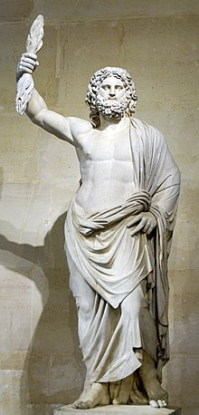
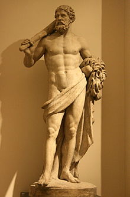
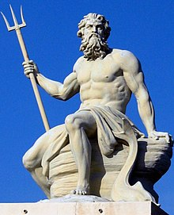

<!DOCTYPE html>
<html lang="es">
    <head>
        <meta charset="UTF-8">
        <meta name="viewport" content="width=device-width, initial-scale=1.0">
        <title>Cultura Griega</title>
        <link rel="stylesheet" href="style.css">
        <link rel="stylesheet" href="css/mitologia.css">
    </head>
<body>
   <div class="top-bar">
        <form action="buscar.html" method="get">
            <input type="text" name="query" placeholder="Buscar...">
            <button type="submit">Buscar</button>
        </form>
        <div class="social-icons">
            <a href="https://www.facebook.com" target="_blank"></a>
            <a href="https://www.twitter.com" target="_blank"></a>
            <a href="https://www.instagram.com" target="_blank"></a>
            <a href="contact.html"></a>
        </div>
    </div>
    <header>
        <h1>Cultura Griega</h1>
    </header>
    <main>
        <div class="author-info">
            
            <span>Autor: Juan Pérez</span>
        </div>
        <div class="author-info2">
            <span>Fecha: 15 de Octubre, 2023</span>
        </div>
        <div class="nav-images">
            <a href="historia.html">
                
                <p>Historia</p>
            </a>
            <a href="index.html">
                
                <p>Inicio</p>
            </a>
            <a href="arte.html">
                
                <p>Arte</p>
            </a>
            <a href="arquitectura.html">
                
                <p>Arquitectura</p>
            </a>
        </div>
        
            <div class="image-container">
                
                <p>Zeus, rey de los dioses</p>
            </div>
            <p>El panteón griego es vasto y complejo, formado por una gran cantidad de dioses y diosas que representaban diferentes aspectos del mundo natural y la vida humana. Zeus era el rey de los dioses y gobernaba el cielo y los truenos, mientras que Poseidón era el dios del mar, y Hades el dios del inframundo. Atenea, diosa de la sabiduría y la guerra justa, era una de las deidades más veneradas, especialmente en Atenas, que llevó su nombre. Afrodita, diosa del amor y la belleza, influía en las relaciones y emociones de dioses y mortales. Cada dios y diosa tenía su propio culto, festivales y mitos asociados que eran fundamentales para la cultura griega.</p>
        </section>
        
            <div class="image-container">
                
                <p>Hércules y sus doce trabajos</p>
            </div>
            <p>Los mitos griegos son historias fascinantes que explican los orígenes del mundo, el comportamiento de los dioses y los héroes que marcaron la historia griega. La historia de Hércules, conocido por sus doce trabajos, muestra la lucha contra criaturas temibles y la superación de desafíos impuestos por los dioses. La Odisea, obra de Homero, narra el viaje lleno de aventuras de Odiseo de regreso a casa tras la guerra de Troya. También está el mito de Perséfone, que explica el origen de las estaciones del año, y la historia trágica de Édipo, que lucha contra su destino para acabar cumpliéndolo. Estos mitos reflejan los valores, miedos y creencias del pueblo griego.</p>
        </section>
        
            <div class="image-container">
                
                <p>Poseidón, dios del mar</p>
            </div>
            <!-- Aquí puedes añadir un pequeño cuestionario usando JavaScript -->
            <form>
                <label>¿Quién es el dios del mar en la mitología griega?</label><br>
                <input type="radio" name="dios" value="Poseidón" id="poseidon"> Poseidón<br>
                <input type="radio" name="dios" value="Zeus" id="zeus"> Zeus<br>
                <input type="radio" name="dios" value="Hades" id="hades"> Hades<br>
                <input type="hidden" name="correct-answer" value="Poseidón">
                <input type="submit" value="Enviar">
            </form>
            <p id="quiz-result"></p>
        </section>
    </main>
    <footer>
        <p>&copy; 2024 Cultura Griega. Todos los derechos reservados.</p>
    </footer>
    
</body>
</html>
